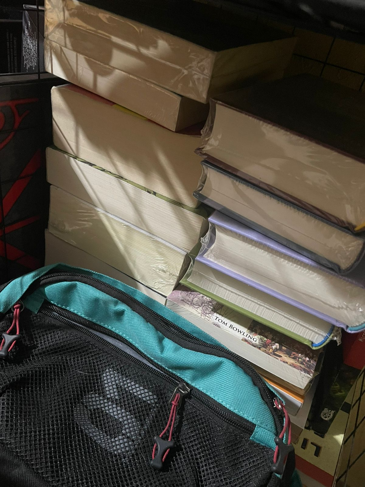
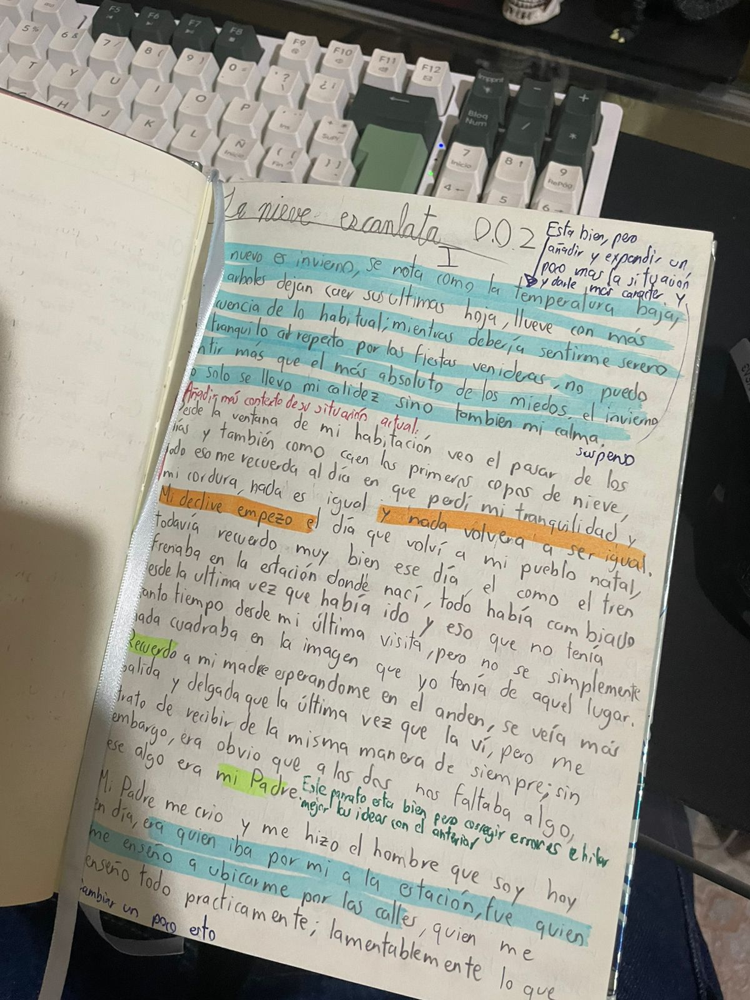
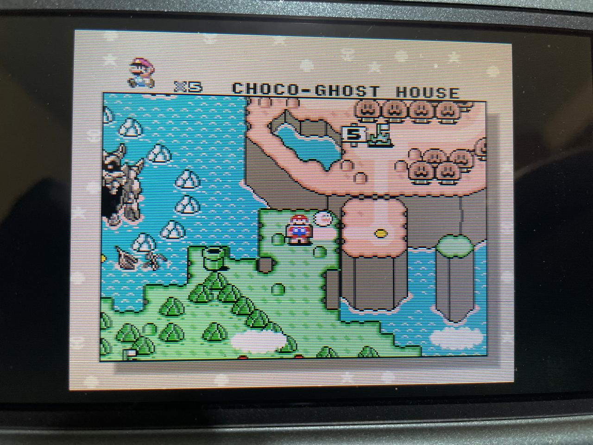
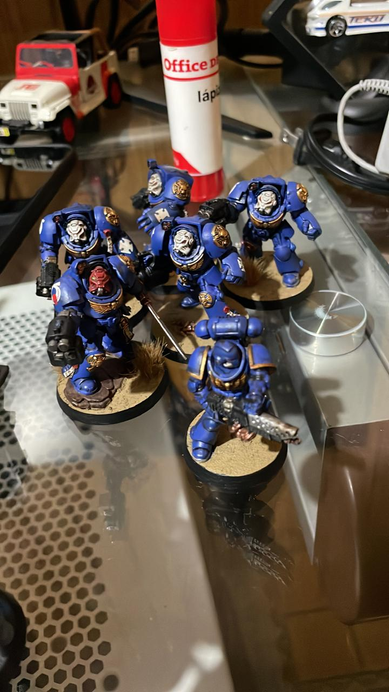
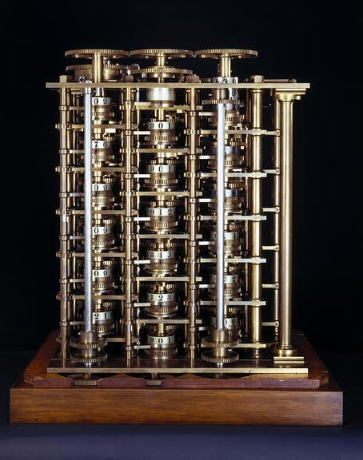
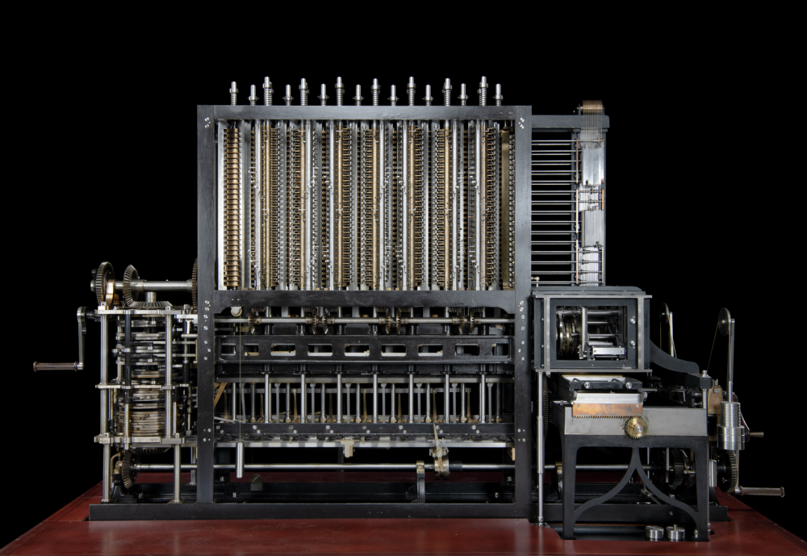
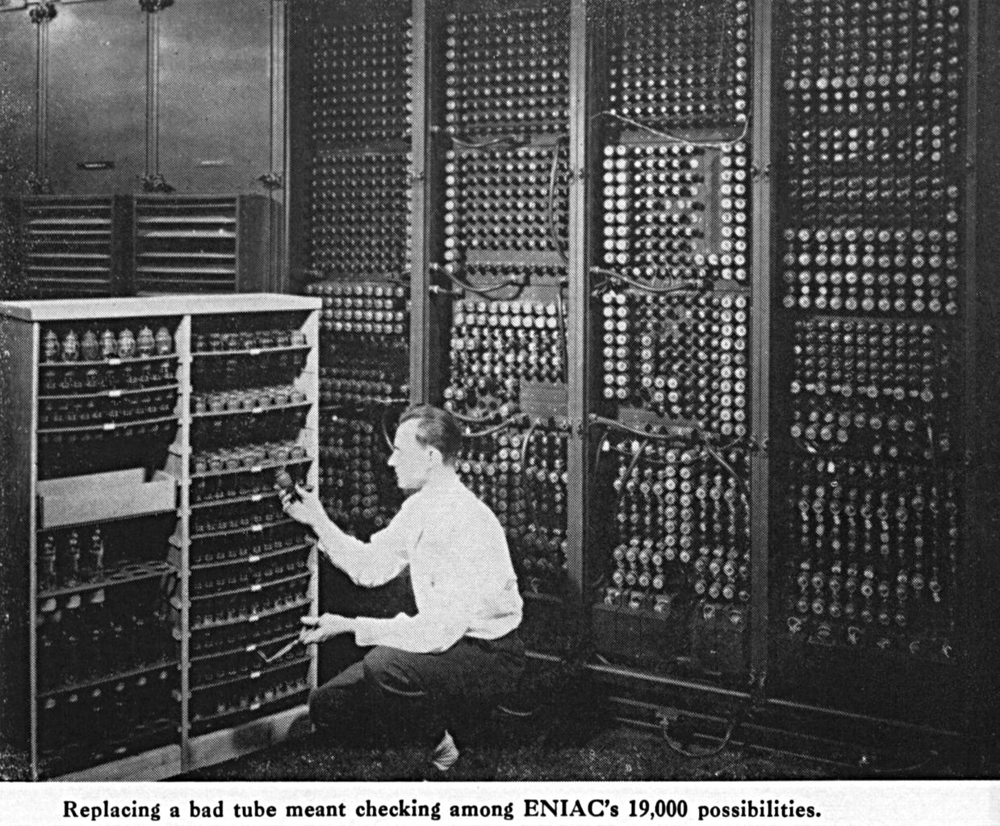

documents & credentials
Documentación
Certificados, credenciales y materiales de referencia.
CV
RSA
01
Certificados de Idioma
02
Certificaciones Técnicas
Ingeniero en Sistemas Computacionales apasionado por la criptografía, los sistemas de bajo nivel y el desarrollo web. Construyo herramientas que combinan elegancia matemática con utilidad práctica.




Herramientas, experimentos y demostraciones técnicas.
Certificados, credenciales y materiales de referencia.
El padre de la computación · 1791 – 1871

Charles Babbage nació el 26 de diciembre de 1791 en Londres, Inglaterra. Hijo de un banquero, creció en una familia acomodada que le permitió acceder a una educación de primer nivel. Desde joven demostró un talento extraordinario para las matemáticas, llegando a estudiar en el Trinity College y el Peterhouse de Cambridge, donde se graduó en 1814.
Su insatisfacción con los errores en las tablas matemáticas de la época —calculadas a mano por equipos de personas— sembró la semilla de lo que se convertiría en la obsesión de su vida: construir una máquina capaz de calcular sin error.

En 1822 Babbage propuso la Difference Engine No. 1: una máquina mecánica capaz de calcular y tabular funciones polinomiales. Obtuvo financiamiento del gobierno británico y pasó décadas tratando de construirla, aunque el proyecto nunca se completó en vida del inventor debido a conflictos con el maquinista Joseph Clement y la complejidad de las piezas requeridas.
El London Science Museum completó la Difference Engine No. 2 —diseñada entre 1847 y 1849— en 1991, demostrando que los planos de Babbage eran correctos y funcionales. La máquina tiene 4,000 piezas y pesa 2.6 toneladas.

La verdadera revolución llegó con la Analytical Engine, concebida a partir de 1837. Este diseño era radicalmente diferente: incluía una Mill (unidad de procesamiento análoga a una CPU moderna), un Store (memoria para 1,000 números de 50 dígitos), tarjetas perforadas de entrada tomadas de los telares Jacquard, y salidas impresas.
La matemática Ada Lovelace —con quien Babbage colaboró estrechamente— tradujo y amplió las notas del ingeniero militar italiano Luigi Menabrea sobre la máquina. Sus anotaciones incluían lo que hoy se reconoce como el primer algoritmo publicado para ser procesado por una máquina, convirtiéndola en la primera programadora de la historia.

Babbage murió el 18 de octubre de 1871 sin haber completado ninguna de sus máquinas. Sin embargo, sus diseños contenían conceptos que resurgirían un siglo después: control de flujo condicional, bucles, subrutinas y la separación entre programa y datos. Alan Turing, John von Neumann y los pioneros del siglo XX construyeron, sin saberlo, sobre los cimientos que Babbage había imaginado en papel y latón.
Más allá de la computación, Babbage fue un polímata activo: contribuyó a la criptografía (descubrió un método para descifrar el cifrado de Vigenère, aunque no lo publicó), fundó la Royal Astronomical Society y escribió tratados sobre economía industrial. Su libro On the Economy of Machinery and Manufactures (1832) anticipó conceptos de la cadena de producción moderna.